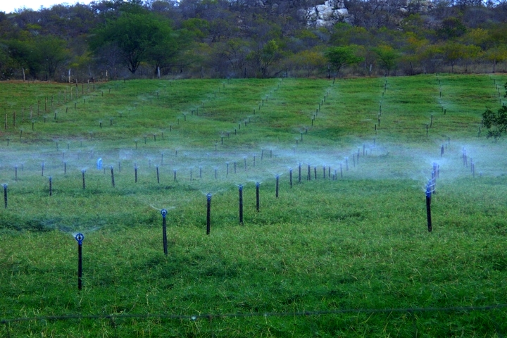

IRRIGADOR PARA MELHORIA E QUALIDADE NA PLANTA

Irrigadores na pastagem, é feito em piquetes para que teja um pasto de qualidade aos animais e é uma excelente ferramenta na época de seca, o pasto se matém em ótimo estado e continua tendo uma produtividade normal dos animais.